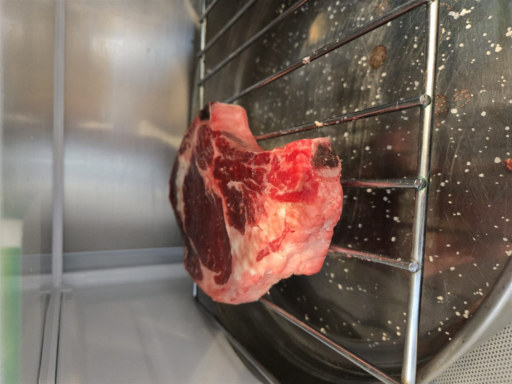
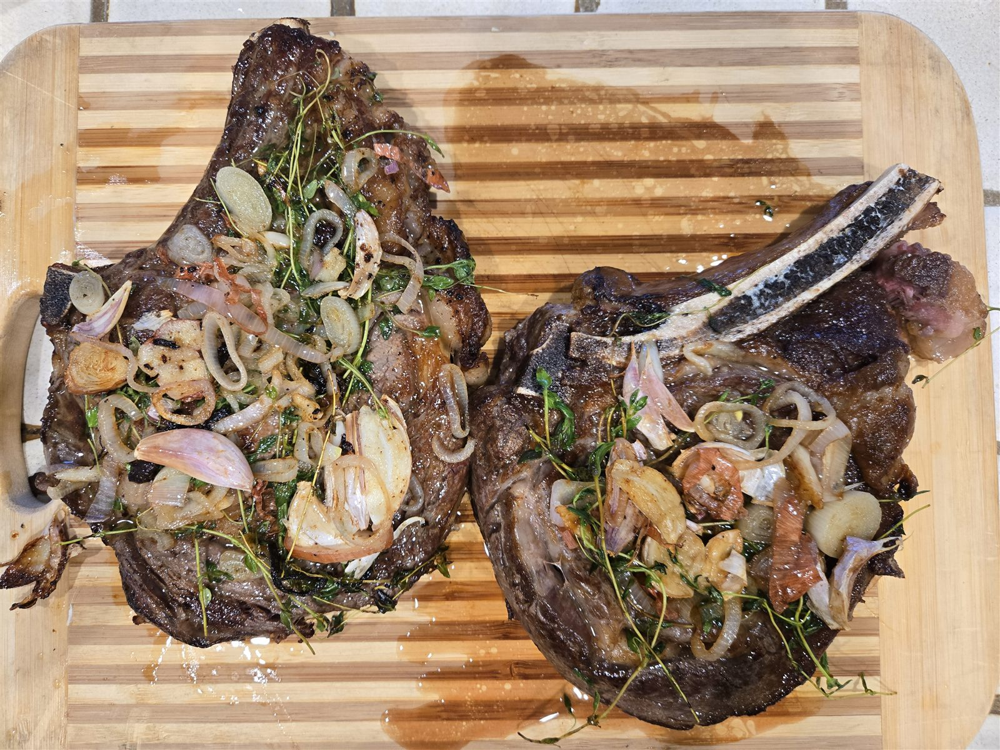
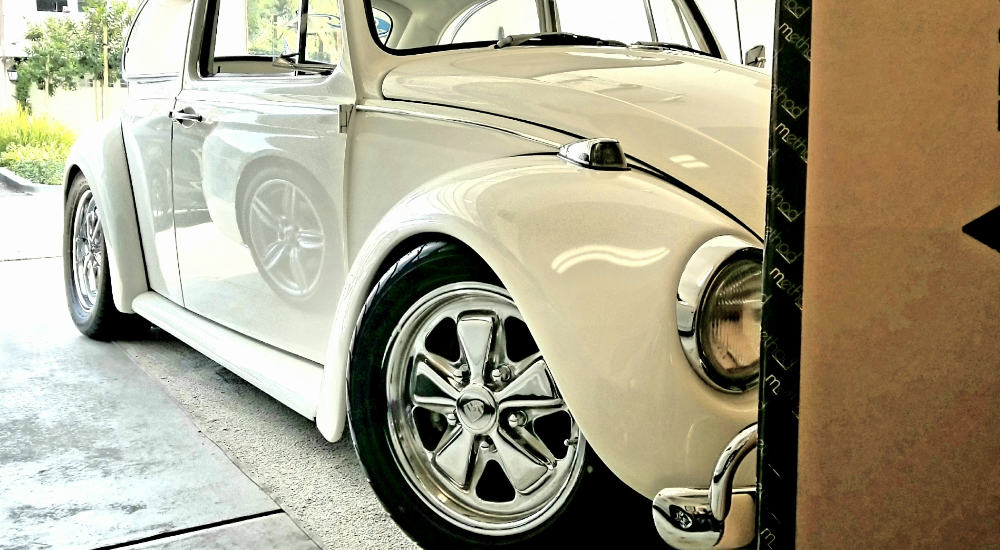
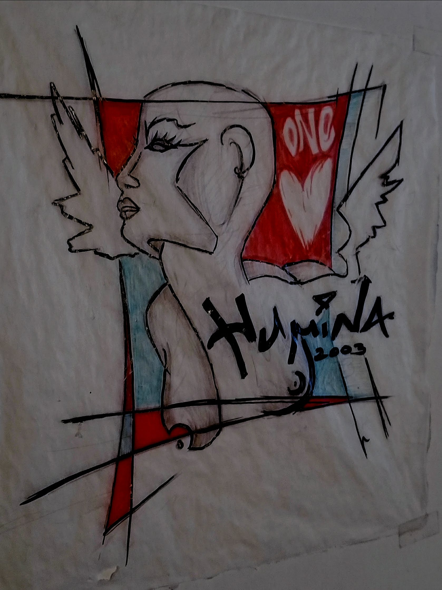
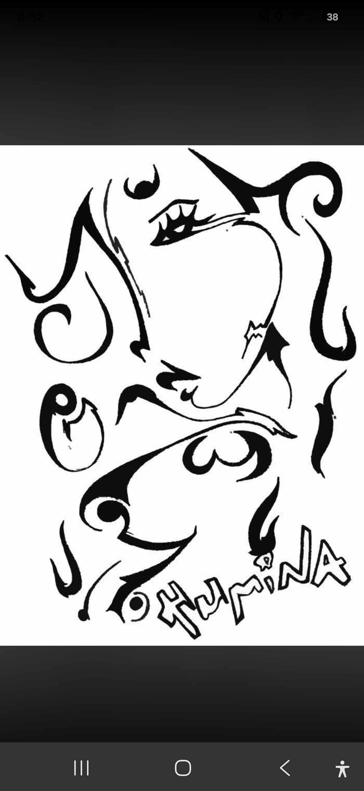
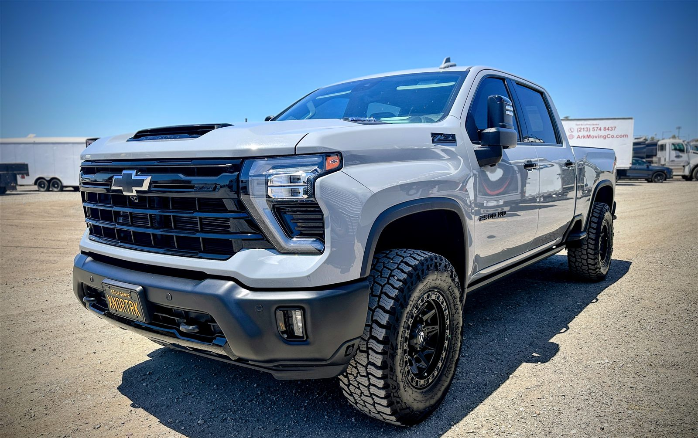
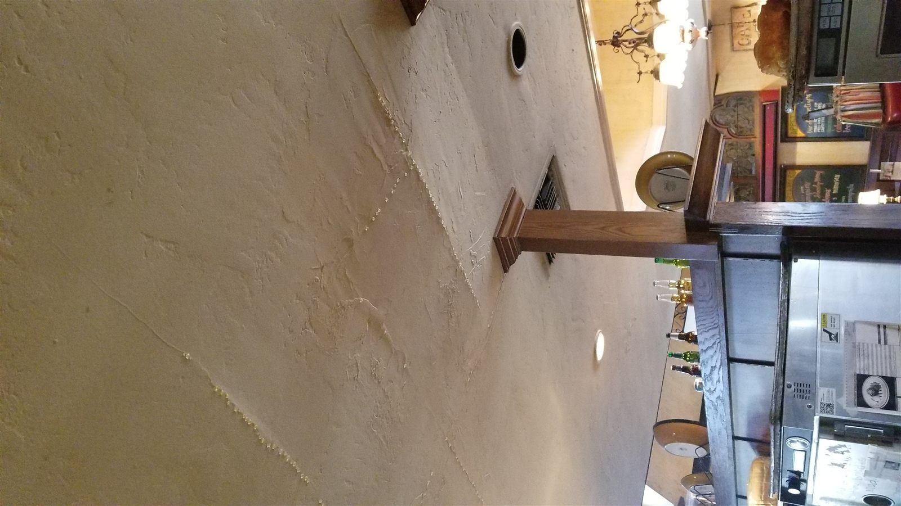
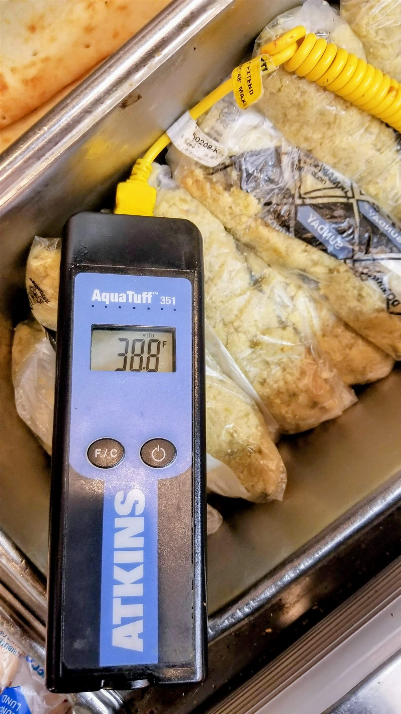

Cooking
Ribeye process
Following this YouTube video: “funny guy to watch; the drying/brining was definitely a home run!”
An archive of ongoing learning material—things worth keeping that aren't headline work.

Following this YouTube video: “funny guy to watch; the drying/brining was definitely a home run!”

“Was a bit harder than I wanted it to be—should've known a bone-in ribeye is much harder to get even temps.”

Personal-use '67 classic Bug, restored by the owner—shared simply because it's worth sharing.

A sample of the owner's own art.

Same art thread: taken from sketch to vector the old-school way.

“My brother's truck.” More pictures and a parts-added detail coming later.

From restaurant operations years: represents chaos and the ability to confront and manage high-stress environments.

Restaurant operations, held for future context.